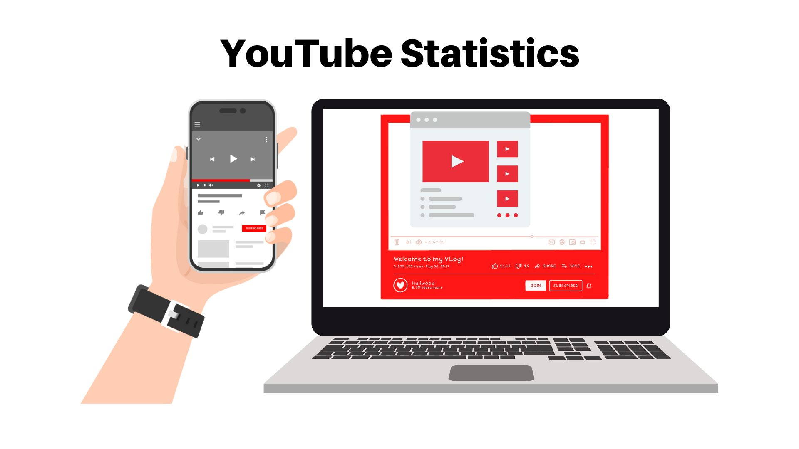

Ileana's Data Analytics Portfolio
I'm excited to share my portfolio with you to demonstrate my data analytical skills. Examples of my work in data cleaning, data analysis, and data visualization can be seen in my portfolio. I have worked with a variety of data sources, including databases and spreadsheets. Hope you dig it. :)
My journey in data analytics started when I became curious about data and was fascinated by how it is used in the real world. As I explored the power of data to provide meaningful insights, I was motivated to make a career change from a licensed electronics engineer to a data analyst. I wanted to use my analytical skills and creativity to help businesses make informed decisions based on data-driven insights.
Throughout my career, I have actively developed my communication and analytical skills through various experiences. These include analyzing reports and providing insightful recommendations, reviewing project workplans to ensure alignment with changing needs and objectives, actively engaging in client meetings to better understand specific requirements, and carefully examining customer concerns to determine the most suitable course of action to address them. These experiences have allowed me to strengthen my ability to effectively communicate and analyze information in order to drive successful outcomes.
I'm determined to launch a successful career as a data analyst. To achieve this goal, I have dedicated my time and effort to complete my training in Google Data Analytics. You can verify my professional certificate from the program here. This training has equipped me with essential skills in areas such as spreadsheets, SQL, Tableau, and R, which are fundamental to the role of a data analyst. To further enhance my skills, I am currently undergoing a Python training on Udemy. I am fully committed to studying and participating in additional training programs to become a proficient data analyst.
Recent Work

The COVID-19 pandemic has caused a staggering number of cases and deaths globally. Since its emergence in late 2019, the virus has spread fast across countries and continents. Millions of confirmed cases have been reported worldwide. The numbers continue to fluctuate as new infections are detected and recorded. Tragically, the pandemic has resulted in a significant loss of life, with a considerable death toll attributed to COVID-19. The impact of COVID-19 on specific regions and countries has varied, with some experiencing higher caseloads and fatalities than others. Efforts to track and control the spread of the virus have involved widespread testing, contact tracing, and implementation of preventative measures such as mask mandates, social distancing, and vaccination campaigns.
Source: Coronavirus (COVID-19) Deaths
GitHub: Impacts of Covid-19 Virus to Human Life

Analyzing the popularity of YouTube videos is crucial for content creators and businesses as it enables them to customize their content strategy for optimal engagement and broader audience reach. It also provides creators with insights into audience engagement and helps them identify trends and patterns that drive increased viewer interaction. By evaluating popularity metrics, businesses can assess the success and impact of their videos, empowering them to make data-driven decisions regarding future content production and monetization strategies.
GitHub: YouTube Statistics
Get In Touch
If you're interested in collaborating with me, please don't hesitate to reach out and we can connect - I'd be more than happy to work with you!